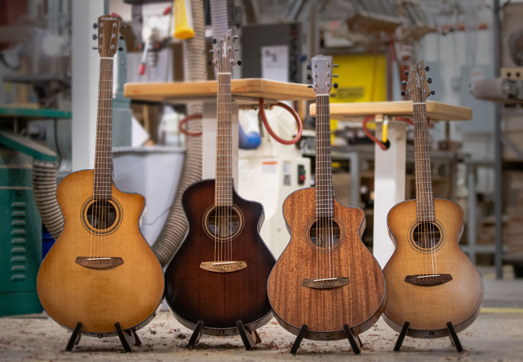

Welcome to Alex's guitar shop!
Selling guitars and guitar accessories for over 20 years.
Luthery, the age-old artform of making stringed instruments, starting with craftsmen creating beautiful, intricate and functional works of art, such as the lute in Europe or the Oud in the Middle East, luthery has been a craft valued by all sects of society for centuries. Fun fact, the Arabic word for lute is ud, which literally means "From wood", highlighting the tradition of using natural materials in the craft.
This majestic profession has evolved through the ages to encompass more contemporary stringed instruments, such as the delicate timbres of the violin family, to the most prevalent example of today, the resonant masterpiece that is the modern guitar.
At Alex's guitar shop, we take pride in being part of this time honored tradition. Our pieces are more than just instruments, they are a loving tribute to the long standing and deeply human art of luthery. Each guitar one of our craftspeople create by hand continues this tradition with as much care and attention to detail as the artists of old in the annals of history.
Using cutting edge modern techniques, while honoring where we came from, makes every one of our guitars a unique and high-quality masterpiece. Wether a greenhorn or a battle-tested master of the craft, you will a perfect guitar to fit any of your needs, with a sound and quality that is unmatched by even the most expensive popular brands.
Check out our new lineup!
Though we pride ourselves in the quality and make of our instruments, there are many other great brands out there, we are pleased to anounce that we will be stocking guitars from our new partners at Breedlove!
Upcoming Event!
Join us every friday from 5-8 for our local talent showcase, featuring all the best solo musicians in town!